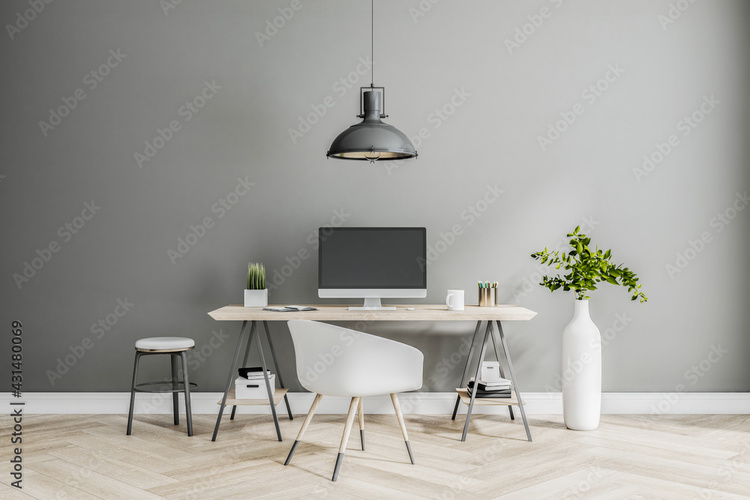
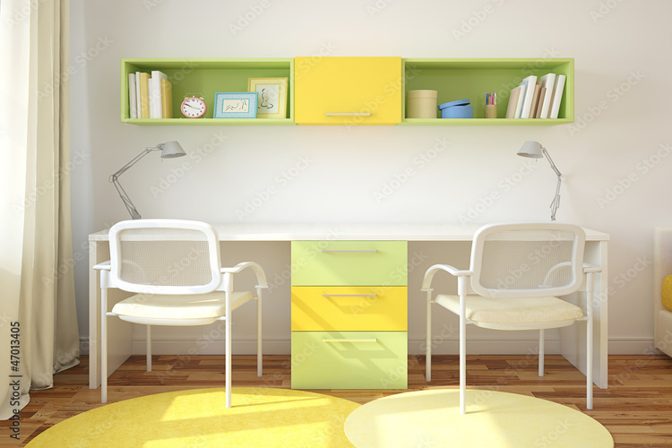
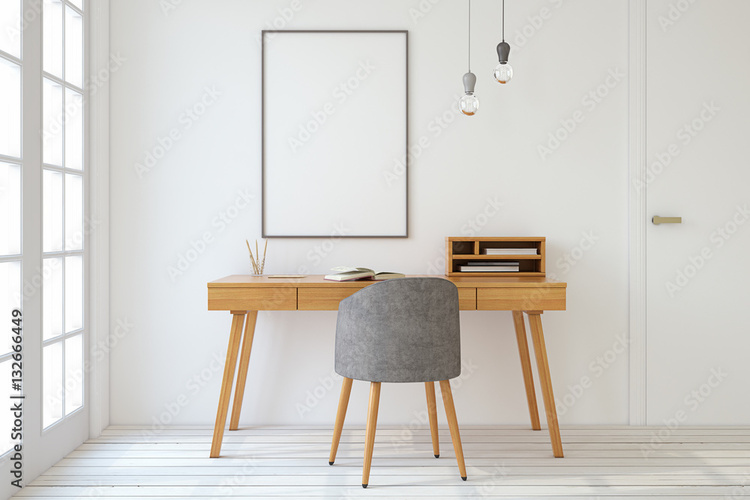

Escritorio color cafe claro con 32 cajones y 2 repisas pequeñas, con cuatro patas, la silla es de color negro hecho de fierro, con un pequeño colchon para el asiento.
Escritorio buggy
Escritorio color cafe con 3 cajones y con la parte de arriba de color blanco, con un pequeño banco del mismo color blanco.
Escritorio dracule
Escritorio color gris claro, con patas de plastico transparente con puntas doradas, agarraderas color dorado, con 4 cajones, silla de plastico color transparente
Escritorio iruma
Escritorio color blanco con 5 cajones de cada lado con la parte de arriba color cafe, silla color cafe con la parte del asiento estilo tejido.

Escritorio alice
Ecritorio color blanco con patas d metal gris, estas estan entreabiertas para poder guardar cosas, con una silla de color balnco con patas cafe y puntas con estilo metalico.
Escritorio opera
Escritorio color cafe con patas negras metalicas y una silla negra de madera.
Escritorio belle
Escritorio color cafe con patas metalicas, la silla es de color beige acolchonado, y con patas color cafe .
Escritorio keroli
Escritorio color blanco, con tres cajones y la parte de arriba color verde, con silla con respaldo y asiento acolchonado de color verde, con patas color blanco.

Escritorio geminis
Escritorio doble, con cajones en la parte de en medio para dividir ambos lugares. Sillas de plastico color blanco. Con una pequeña repisa de color verde para un mayor contraste
Escritorio luffy
Escritorio de color cafe, con 3 cajones blancos de cada costado, una silla con ruedas y una repisa de color cafe con una cajonera blanca.

Escritorio demoidol
Ecritorio color cafe claro, con silla forrada de tela gris y patas cafe claro.
Escritorio recovery
Escritorio color negro con toques dorados, silla forrada, con patas de color negro.